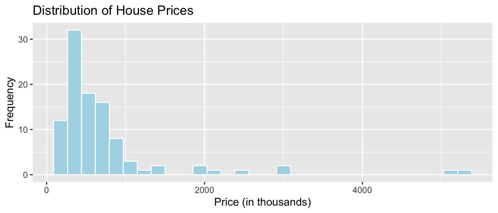
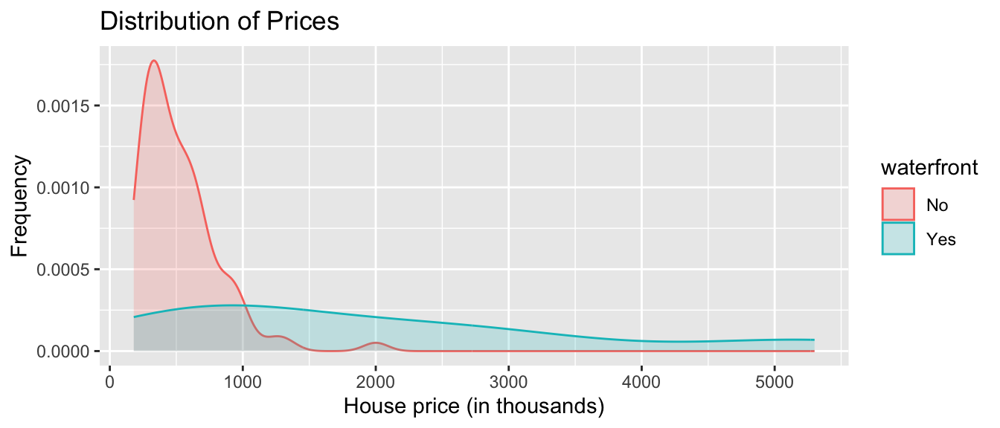
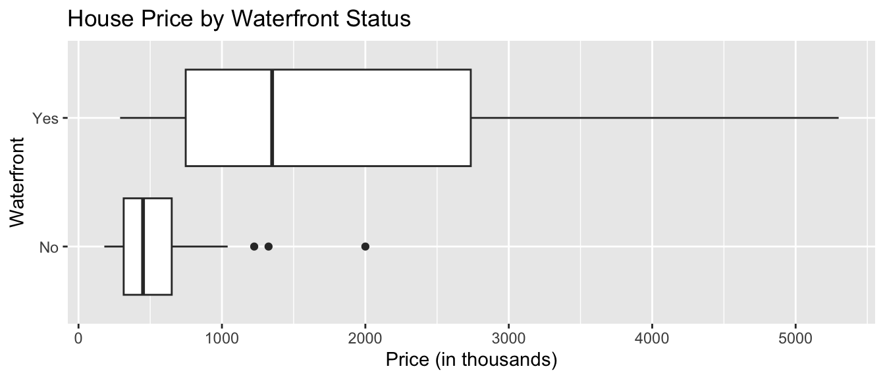
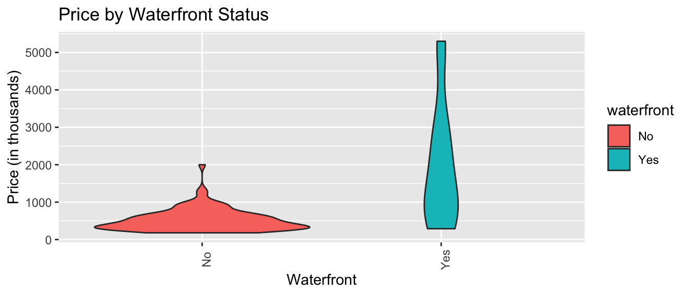
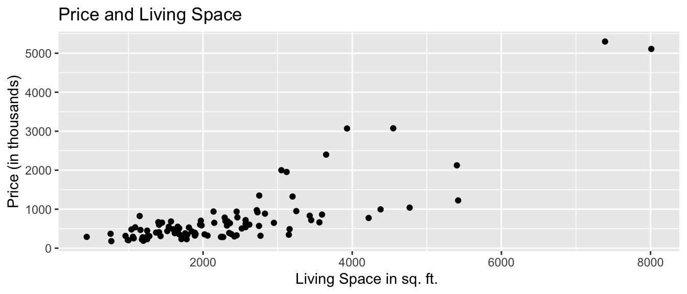
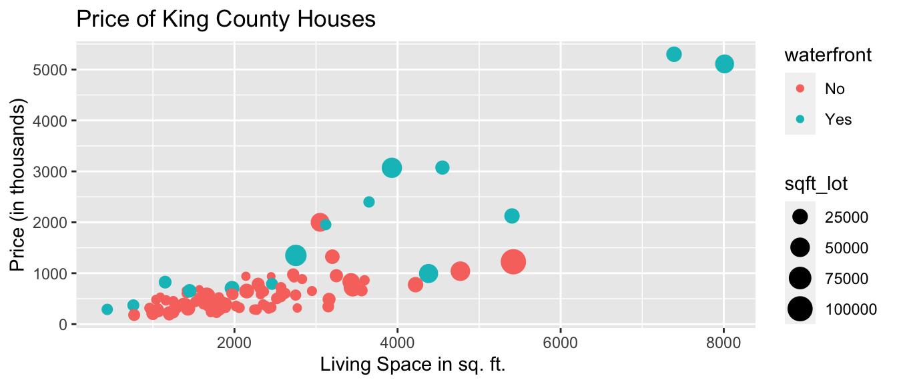
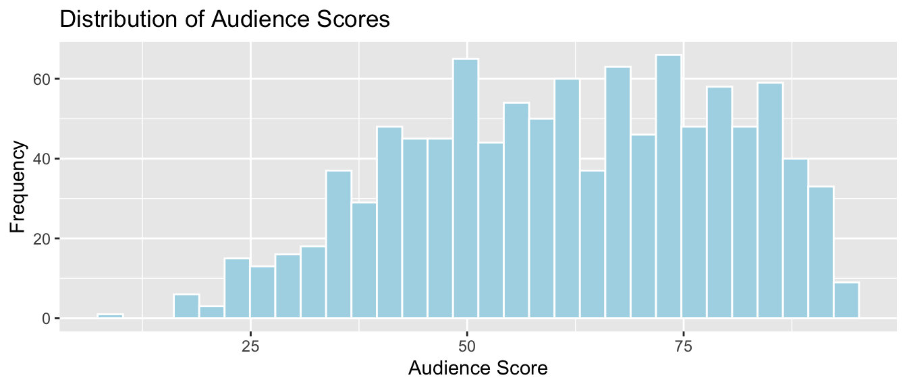
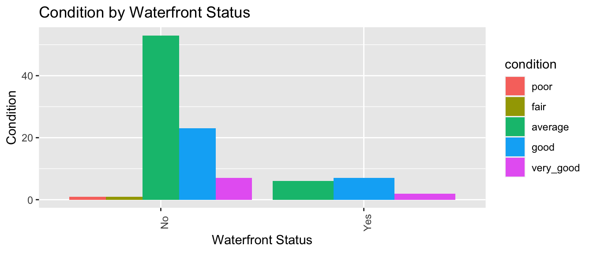
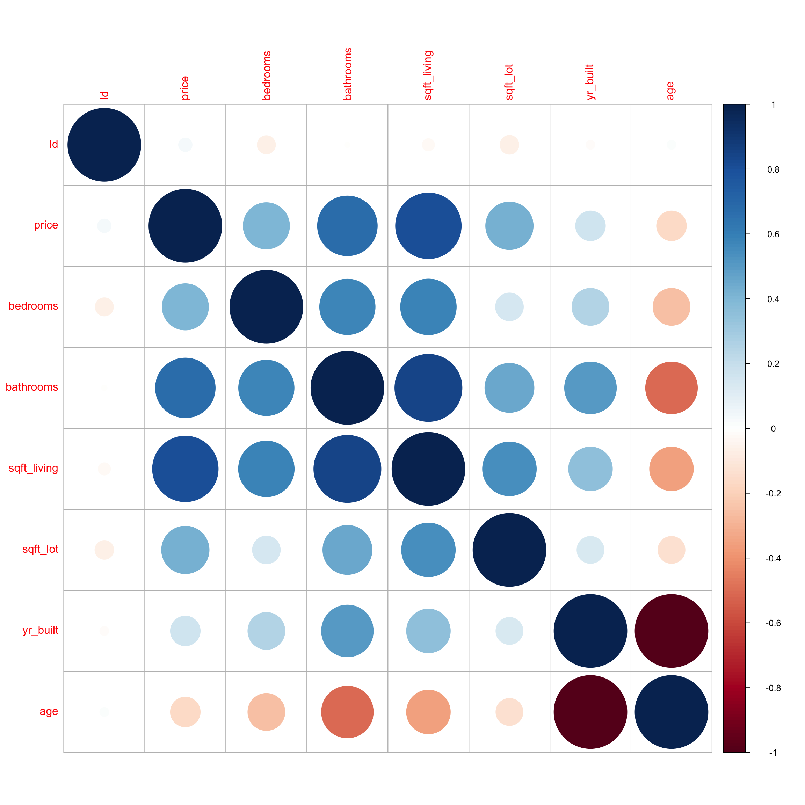
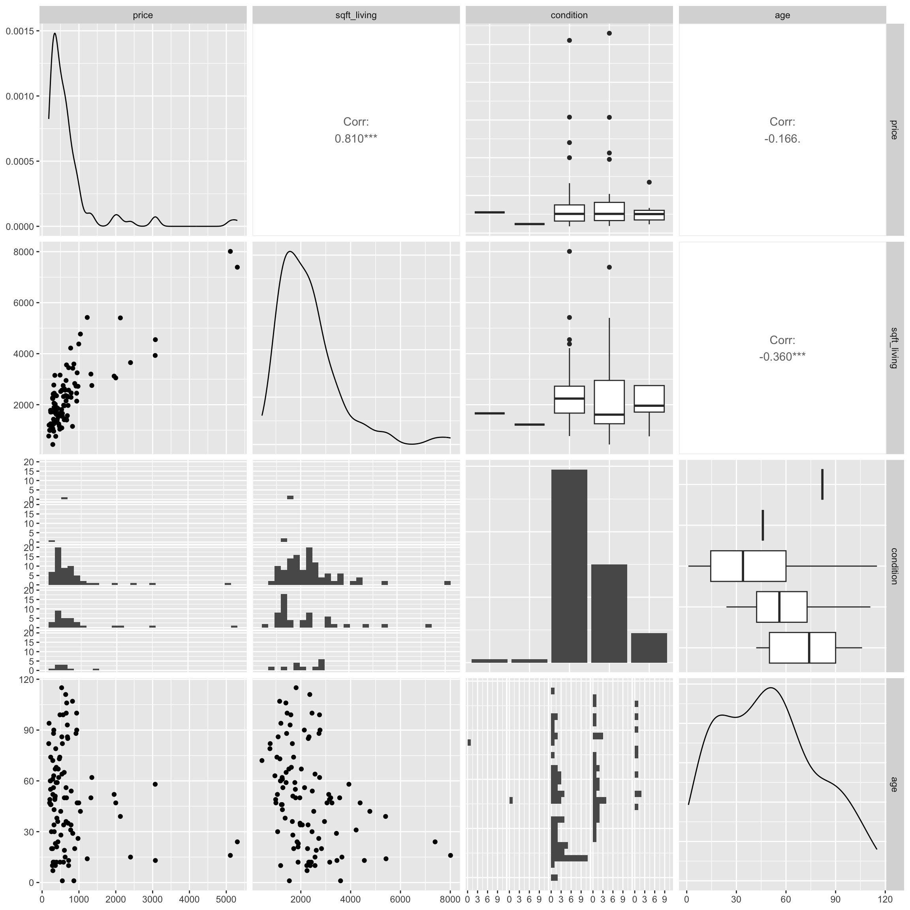

Chapter 1 Exploratory Data Analysis
Learning Outcomes:
- Interpret graphical summaries of data, including boxplots, histograms, violin plots, density plots, scatterplots, and correlation plots.
- Read data from a .csv file into R.
- Preview data in R.
- Create graphical summaries of data using R.
- Calculate summary statistics for entire datasets and grouped summaries.
- Create reproducible documents using R Markdown.
1.1 Getting Started in R
This section provides examples of how to read data into R, create graphics, like those in the previous section, and calculate summary statistics.
We’ll work with data on houses that sold in King County, WA, (home of Seattle) between 2014 and 2015.
We begin by loading the tidyverse package which can be used to create professional data graphics and summaries.
1.1.1 Previewing the Data
head()
The head() function displays the first 5 rows of the dataset.
## # A tibble: 6 × 9
## Id price bedrooms bathrooms sqft_living sqft_lot condition waterfront
## <int> <dbl> <dbl> <dbl> <dbl> <dbl> <fct> <fct>
## 1 1 1225 4 4.5 5420 101930 average No
## 2 2 885. 4 2.5 2830 5000 average No
## 3 3 385. 4 1.75 1620 4980 good No
## 4 4 253. 2 1.5 1070 9643 average No
## 5 5 468. 2 1 1160 6000 good No
## 6 6 310. 3 1 1430 19901 good No
## # … with 1 more variable: yr_built <dbl>The rows of the dataset are called observations. In this case, the observations are the houses.
The columns of the dataset, which contain information about the houses, are called variables.
glimpse
The glimpse() command shows the number of observations (rows), and the number of variables, (columns). We also see the name of each variable and its type. Variable types include
Categorical variables, which take on groups or categories, rather than numeric values. In R, these might be coded as logical
<logi>, character<chr>, factor<fct>and ordered factor<ord>.Quantitative variables, which take on meaningful numeric values. These include numeric
<num>, integer<int>, and double<dbl>.Date and time variables take on values that are dates and times, and are denoted
<dttm>
## Rows: 100
## Columns: 9
## $ Id <int> 1, 2, 3, 4, 5, 6, 7, 8, 9, 10, 11, 12, 13, 14, 15, 16, 17,…
## $ price <dbl> 1225.00, 885.00, 385.00, 252.70, 468.00, 310.00, 550.00, 4…
## $ bedrooms <dbl> 4, 4, 4, 2, 2, 3, 4, 4, 3, 3, 3, 4, 5, 3, 4, 4, 3, 4, 3, 3…
## $ bathrooms <dbl> 4.50, 2.50, 1.75, 1.50, 1.00, 1.00, 1.00, 1.00, 1.00, 2.25…
## $ sqft_living <dbl> 5420, 2830, 1620, 1070, 1160, 1430, 1660, 1600, 960, 1660,…
## $ sqft_lot <dbl> 101930, 5000, 4980, 9643, 6000, 19901, 34848, 4300, 6634, …
## $ condition <fct> average, average, good, average, good, good, poor, good, a…
## $ waterfront <fct> No, No, No, No, No, No, No, No, No, No, No, No, No, No, No…
## $ yr_built <dbl> 2001, 1995, 1947, 1985, 1942, 1927, 1933, 1916, 1952, 1979…There are 100 houses in the dataset, and 9 variables on each house.
summary
summary displays the mean, minimum, first quartile, median, third quartile, and maximum for each numeric variable, and the number of observations in each category, for categorical variables.
## Id price bedrooms bathrooms
## Min. : 1.00 Min. : 180.0 Min. :1.00 Min. :0.750
## 1st Qu.: 25.75 1st Qu.: 322.9 1st Qu.:3.00 1st Qu.:1.500
## Median : 50.50 Median : 507.5 Median :3.00 Median :2.000
## Mean : 50.50 Mean : 735.4 Mean :3.39 Mean :2.107
## 3rd Qu.: 75.25 3rd Qu.: 733.8 3rd Qu.:4.00 3rd Qu.:2.500
## Max. :100.00 Max. :5300.0 Max. :6.00 Max. :6.000
## sqft_living sqft_lot condition waterfront yr_built
## Min. : 440 Min. : 1044 poor : 1 No :85 Min. :1900
## 1st Qu.:1410 1st Qu.: 5090 fair : 1 Yes:15 1st Qu.:1948
## Median :2000 Median : 7852 average :59 Median :1966
## Mean :2291 Mean : 13205 good :30 Mean :1965
## 3rd Qu.:2735 3rd Qu.: 12246 very_good: 9 3rd Qu.:1991
## Max. :8010 Max. :101930 Max. :20141.1.2 Modifying the Data
Next we’ll look at how to manipulate the data and create new variables.
Adding a New Variable
We can use the mutate() function to create a new variable based on variables already in the dataset.
Let’s add a variable giving the age of the house, as of 2015.
## # A tibble: 6 × 10
## Id price bedrooms bathrooms sqft_living sqft_lot condition waterfront
## <int> <dbl> <dbl> <dbl> <dbl> <dbl> <fct> <fct>
## 1 1 1225 4 4.5 5420 101930 average No
## 2 2 885. 4 2.5 2830 5000 average No
## 3 3 385. 4 1.75 1620 4980 good No
## 4 4 253. 2 1.5 1070 9643 average No
## 5 5 468. 2 1 1160 6000 good No
## 6 6 310. 3 1 1430 19901 good No
## # … with 2 more variables: yr_built <dbl>, age <dbl>Selecting Columns
If the dataset contains a large number of variables, narrow down to the ones you are interested in working with. This can be done with the select() command. If there are not very many variables to begin with, or you are interested in all of them, then you may skip this step.
Let’s create a smaller version of the dataset, with only the columns price, sqft_living, and waterfront. We’ll call this Houses_3var.
## # A tibble: 6 × 3
## price sqft_living waterfront
## <dbl> <dbl> <fct>
## 1 1225 5420 No
## 2 885. 2830 No
## 3 385. 1620 No
## 4 253. 1070 No
## 5 468. 1160 No
## 6 310. 1430 No1.1.2.1 Filtering by Row
The filter() command narrows a dataset down to rows that meet specified conditions.
We’ll filter the data to include only houses built after 2000.
## # A tibble: 6 × 10
## Id price bedrooms bathrooms sqft_living sqft_lot condition waterfront
## <int> <dbl> <dbl> <dbl> <dbl> <dbl> <fct> <fct>
## 1 1 1225 4 4.5 5420 101930 average No
## 2 16 3075 4 5 4550 18641 average Yes
## 3 23 862. 5 2.75 3595 5639 average No
## 4 24 360. 4 2.5 2380 5000 average No
## 5 25 625. 4 2.5 2570 5520 average No
## 6 27 488. 3 2.5 3160 13603 average No
## # … with 2 more variables: yr_built <dbl>, age <dbl>Now, we’ll filter the data to include only houses on the waterfront.
## # A tibble: 6 × 10
## Id price bedrooms bathrooms sqft_living sqft_lot condition waterfront
## <int> <dbl> <dbl> <dbl> <dbl> <dbl> <fct> <fct>
## 1 16 3075 4 5 4550 18641 average Yes
## 2 19 995. 3 4.5 4380 47044 average Yes
## 3 34 825. 2 1 1150 12775 good Yes
## 4 40 2400. 4 2.5 3650 8354 average Yes
## 5 42 290. 2 0.75 440 8313 good Yes
## 6 46 5111. 5 5.25 8010 45517 average Yes
## # … with 2 more variables: yr_built <dbl>, age <dbl>1.2 Data Visualization
1.2.1 Histogram
Next, we’ll create graphics to help us visualize the distributions and relationships between variables. We’ll use the ggplot() function, which is part of the tidyverse package.
Histograms are useful for displaying the distribution of a single quantitative variable. In a histogram, the x-axis breaks the variable into ranges of values, and the y-axis displays the number of observations with a value falling in that category (frequency).
General Template for Histogram
ggplot(data=DatasetName, aes(x=VariableName)) +
geom_histogram(fill="colorchoice", color="colorchoice") +
ggtitle("Plot Title") +
xlab("x-axis label") +
ylab("y-axis label")Histogram of House Prices
ggplot(data=Houses, aes(x=price)) +
geom_histogram(fill="lightblue", color="white") +
ggtitle("Distribution of House Prices") +
xlab("Price (in thousands)") +
ylab("Frequency")
We see that the distribution of house prices is right-skewed. Most houses cost less than $1,000,000, though there are a few houses that are much more expensive. The most common price range is around $400,000 to $500,000.
1.2.2 Density Plot
Density plots show the distribution for a quantitative variable price. Scores can be compared across categories, like whether or not the house is on a waterfront.
General Template for Density Plot
ggplot(data=DatasetName, aes(x=QuantitativeVariable,
color=CategoricalVariable, fill=CategoricalVariable)) +
geom_density(alpha=0.2) +
ggtitle("Plot Title") +
xlab("Axis Label") +
ylab("Frequency") alpha, ranging from 0 to 1 dictates transparency.
Density Plot of House Prices
ggplot(data=Houses, aes(x=price, color=waterfront, fill=waterfront)) +
geom_density(alpha=0.2) +
ggtitle("Distribution of Prices") +
xlab("House price (in thousands)") +
ylab("Frequency") 
We see that on average, houses on the waterfront tend to be more expensive and have a greater price range than houses not on the waterfront.
1.2.3 Boxplot
Boxplots can be used to compare a quantitative variable with a categorical variable. The middle 50% of observations are contained in the “box”, with the upper and lower 25% of the observations in each tail.
General Template for Boxplot
ggplot(data=DatasetName, aes(x=CategoricalVariable,
y=QuantitativeVariable)) +
geom_boxplot() +
ggtitle("Plot Title") +
xlab("Variable Name") + ylab("Variable Name") You can make the plot horizontal by adding + coordflip(). You can turn the axis text vertical by adding theme(axis.text.x = element_text(angle = 90)).
Boxplot Comparing Price by Waterfront Status
ggplot(data=Houses, aes(x=waterfront, y=price)) + geom_boxplot() +
ggtitle("House Price by Waterfront Status") +
xlab("Waterfront") + ylab("Price (in thousands)") + coord_flip()
For houses not on the waterfront, the median price is about $400,000, and the middle 50% of prices range from about $300,000 to $600,000.
For waterfront houses, the median price is about $1,500,000, and the middle 50% of prices range from about $900,000 to $1,900,000.
1.2.4 Violin Plot
Violin plots are an alternative to boxplots. The width of the violin tells us the density of observations in a given range.
General Template for Violin Plot
ggplot(data=DatasetName, aes(x=CategoricalVariable, y=QuantitativeVariable,
fill=CategoricalVariable)) +
geom_violin() +
ggtitle("Plot Title") +
xlab("Variable Name") + ylab("Variable Name") Violin Plot Comparing Prices by Waterfront
ggplot(data=Houses, aes(x=waterfront, y=price, fill=waterfront)) +
geom_violin() +
ggtitle("Price by Waterfront Status") +
xlab("Waterfront") + ylab("Price (in thousands)") +
theme(axis.text.x = element_text(angle = 90))
Again, we see that houses on the waterfront tend to be more expensive than those not on the waterfront, and have a wider range in prices.
1.2.5 Scatterplot
Scatterplots are used to visualize the relationship between two quantitative variables.
Scatterplot Template
ggplot(data=DatasetName, aes(x=CategoricalVariable, y=QuantitativeVariable)) +
geom_point() +
ggtitle("Plot Title") +
ylab("Axis Label") +
xlab("Axis Label")Scatterplot Comparing Price and Square Feet of Living Space
ggplot(data=Houses, aes(x=sqft_living, y=price)) +
geom_point() +
ggtitle("Price and Living Space") +
ylab("Price (in thousands)") +
xlab("Living Space in sq. ft. ")
We see that there is an upward trend, indicating that houses with more living space tend to, on average, be higher priced than those with less living space. The relationship appears to be roughly linear, though there might be some curvature, as living space gets very large. There are some exceptions to this trend, most notably a house with more than 7,000 square feet, priced just over $1,000,000.
We can also add color, size, and shape to the scatterplot to display information about other variables.
We’ll use color to illustrate whether the house is on the waterfront, and size to represent the square footage of the entire lot (including the yard and the house).
ggplot(data=Houses,
aes(x=sqft_living, y=price, color=waterfront, size=sqft_lot)) +
geom_point() +
ggtitle("Price of King County Houses") +
ylab("Price (in thousands)") +
xlab("Living Space in sq. ft. ")
We notice that many of the largest and most expensive houses are on the waterfront.
1.2.6 Bar Graph
Bar graphs can be used to visualize one or more categorical variables. A bar graph is similar to a histogram, in that the y-axis again displays frequency, but the x-axis displays categories, instead of ranges of values.
Bar Graph Template
ggplot(data=DatasetName, aes(x=CategoricalVariable)) +
geom_bar(fill="colorchoice",color="colorchoice") +
ggtitle("Plot Title") +
xlab("Variable Name") +
ylab("Frequency") Bar Graph by Condition
ggplot(data=Houses, aes(x=condition)) +
geom_bar(fill="lightblue",color="white") +
ggtitle("Number of Houses by Condition") +
xlab("Condition") +
ylab("Frequency") +
theme(axis.text.x = element_text(angle = 90))
We see that the majority of houses are in average condition. Some are in good or very good condition, while very few are in poor or very poor condition.
1.2.7 Stacked and Side-by-Side Bar Graphs
Stacked Bar Graph Template
ggplot(data = DatasetName, mapping = aes(x = CategoricalVariable1,
fill = CategoricalVariable2)) +
stat_count(position="fill") +
theme_bw() + ggtitle("Plot Title") +
xlab("Variable 1") +
ylab("Proportion of Variable 2") +
theme(axis.text.x = element_text(angle = 90)) Stacked Bar Graph Example
The stat_count(position="fill") command creates a stacked bar graph, comparing two categorical variables. Let’s explore whether waterfront status is related to condition.
ggplot(data = Houses, mapping = aes(x = waterfront, fill = condition)) +
stat_count(position="fill") +
theme_bw() + ggtitle("Condition by Waterfront Status") +
xlab("Waterfront Status") +
ylab("Condition") +
theme(axis.text.x = element_text(angle = 90)) We see that a higher proportion of waterfront houses are in good or excellent condition than non-waterfront houses.
Side-by-side Bar Graph Template
We can create a side-by-side bar graph, using position=dodge.
ggplot(data = DatasetName, mapping = aes(x = CategoricalVariable1,
fill = CategoricalVariable2)) +
geom_bar(position = "dodge") +
ggtitle("Plot Title") +
xlab("Genre") +
ylab("Frequency") Side-by-side Bar Graph Example
ggplot(data = Houses, mapping = aes(x = waterfront, fill = condition)) +
geom_bar(position = "dodge") +
ggtitle("Condition by Waterfront Status") +
xlab("Waterfront Status") +
ylab("Condition") +
theme(axis.text.x = element_text(angle = 90))  In this case, since there are so few waterfront houses, the graph is hard to read and not very useful.
The stacked bar graph is a better way to convey information in this instance, though you may find that for a different dataset, the side-by-side bar graph could be a better choice.
1.2.8 Correlation Plot
Correlation plots can be used to visualize relationships between quantitative variables. Correlation is a number between -1 and 1, describing the strength of the linear relationship between two variables. Variables with strong positive correlations will have correlation close to +1, while variables with strong negative correlations will have correlations close to -1. Variables with little to no relationship will have correlation close to 0.
The cor() function calculates correlations between quantitative variables. We’ll use select_if to select only numeric variables. The `use=“complete.obs” command tells R to ignore observations with missing data.
## Id price bedrooms bathrooms sqft_living sqft_lot yr_built age
## Id 1.00 0.03 -0.06 -0.01 -0.03 -0.07 -0.02 0.02
## price 0.03 1.00 0.40 0.67 0.81 0.42 0.17 -0.17
## bedrooms -0.06 0.40 1.00 0.58 0.58 0.15 0.26 -0.26
## bathrooms -0.01 0.67 0.58 1.00 0.85 0.45 0.50 -0.50
## sqft_living -0.03 0.81 0.58 0.85 1.00 0.54 0.36 -0.36
## sqft_lot -0.07 0.42 0.15 0.45 0.54 1.00 0.14 -0.14
## yr_built -0.02 0.17 0.26 0.50 0.36 0.14 1.00 -1.00
## age 0.02 -0.17 -0.26 -0.50 -0.36 -0.14 -1.00 1.00The corrplot() function in the corrplot() package provides a visualization of the correlations. Larger, thicker circles indicate stronger correlations.

We see that price has a strong positive correlation with square feet of living space, and is also positively correlated with number of bedrooms and bathrooms. Living space, bedrooms, and bathrooms are all positively correlated, which makes sense, since we would expect bigger houses to have more bedrooms and bathrooms. Price does not show much correlation with the other variables. We notice that bathrooms is negatively correlated with age, which means older houses tend to have fewer bathrooms than newer ones. Not surprisingly, age is very strongly correlated with year built.
1.2.9 Scatterplot Matrix
A scatterplot matrix is a grid of plots. It can be created using the ggpairs() function in the GGally package.
The scatterplot matrix shows us:
- Along the diagonal are density plots for quantitative variables, or bar graphs for categorical variables, showing the distribution of each variable.
- Under the diagonal are plots showing the relationships between the variables in the corresponding row and column. Scatterplots are used when both variables are quantitative, bar graphs are used when both variables are categorical, and boxplots are used when one variable is categorical, and the other is quantitative.
- Above the diagonal are correlations between quantitative variables.
Including too many variables can make these hard to read, so it’s a good idea to use select to narrow down the number of variables.

The scatterplot matrix is useful for helping us notice key trends in our data. However, the plot can hard to read as it is quite dense, especially when there are a large number of variables. These can help us look for trends from a distance, but we should then focus in on more specific plots.
1.3 Summary Tables
1.3.1 Calculating Summary Statistics
summarize()
The summarize command calculates summary statistics for variables in the data.
For a set of \(n\) values \(y_i, \ldots, y_n\):
- mean (\(\bar{y}\)) is calculated by \(\bar{y} =\frac{1}{n}\displaystyle\sum_{i=1}^n y_i\).
- standard deviation (\(s\)), a measure of the spread is calculated by \(s =\sqrt{\displaystyle\sum_{i=1}^n \frac{(y_i-\bar{y})^2}{n-1}}\). The square of the standard deviation, called the variance is denoted \(s^2\).
Let’s calculate the mean, median, and standard deviation, in prices.
Houses_Summary <- Houses %>% summarize(Mean_Price = mean(price, na.rm=TRUE),
Median_Price = median(price, na.rm=TRUE),
StDev_Price = sd(price, na.rm = TRUE),
Number_of_Houses = n())
Houses_Summary## # A tibble: 1 × 4
## Mean_Price Median_Price StDev_Price Number_of_Houses
## <dbl> <dbl> <dbl> <int>
## 1 735. 507. 835. 100Notes:
1. The n() command calculates the number of observations.
2. The na.rm=TRUE command removes missing values, so that summary statistics can be calculated. It’s not needed here, since this dataset doesn’t include missing values, but if the dataset does include missing values, you will need to include this, in order to do the calculation.
The kable() function in the knitr() package creates tables with professional appearance.
| Mean_Price | Median_Price | StDev_Price | Number_of_Houses |
|---|---|---|---|
| 735.3525 | 507.5 | 835.1231 | 100 |
1.3.2 Grouped Summaries
group_by()
The group_by() command allows us to calculate summary statistics, with the data broken down by by category.We’ll compare waterfront houses to non-waterfront houses.
Houses_Grouped_Summary <- Houses %>% group_by(waterfront) %>%
summarize(Mean_Price = mean(price, na.rm=TRUE),
Median_Price = median(price, na.rm=TRUE),
StDev_Price = sd(price, na.rm = TRUE),
Number_of_Houses = n())
kable(Houses_Grouped_Summary)| waterfront | Mean_Price | Median_Price | StDev_Price | Number_of_Houses |
|---|---|---|---|---|
| No | 523.7595 | 450 | 295.7991 | 85 |
| Yes | 1934.3800 | 1350 | 1610.7959 | 15 |
Note: arrange(desc(Mean_Gross)) arranges the table in descending order of Mean_Gross. To arrange in ascending order, use arrange(Mean_Gross).